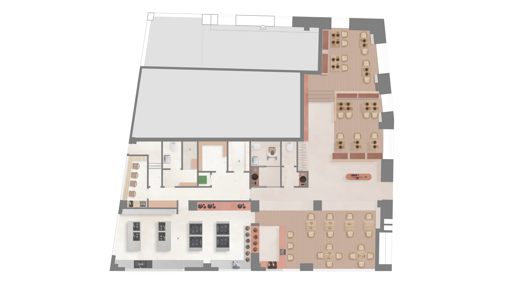

Planimetría
Documentación
Piezas gráficas que describen el proyecto.

seccion-celosia.jpg
Sección — comedor y celosía
Relación de alturas, arcos y luz en la sala principal.

seccion-cocina.jpg
Sección — cocina
Distribución del ámbito de trabajo y almacenaje.

seccion-banos.jpg
Sección — núcleo de baños
Tratamiento de arcos y revestimiento en el aseo.

planta-general.jpg
Planta general
Distribución general del espacio — pendiente.